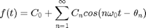
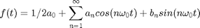
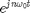
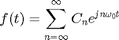
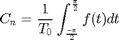
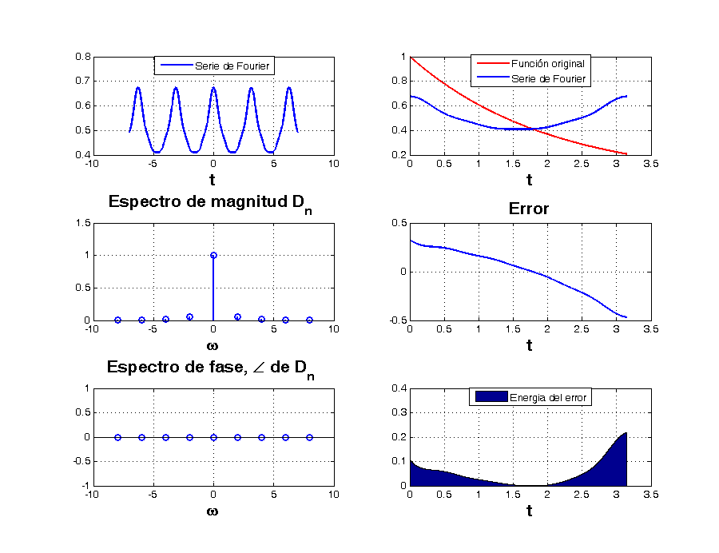

Practica 5
Martinez Ruiz Samuel Mendoza Flores Luis Efrén García Trinidad Hugo Enrique Rubio Guerrero Edgar Miguel
Contents
Objetivos
Realizar gráficas de series de Fourier exponenciales y trigonométricas en tiempo continuo
Manipulación de instrucciones en MATLAB
Calculo númerico de los coeficientes de Fourier
Introducción
Las funciones de Fourier son representaciones de funciones periódicas de períodos T. Siendo una serie trigonométrica de Fourier aquella que se representa por  ó . En muchas aplicaciones de las series de Fourier, es conveniente expresar estas series en términos de los exponentes complejos  Quedando entonces que  La cuál se denomina forma compleja dea serie de Fourier de f(t). Los coeficientes C_n se pueden evaluar fácilmente en términos de a_{n} y b_{n} los cuales en tareas anteriores se han explicado por lo que 
Ejemplo 6.1
d0=0.504; dn=@(n) (0.504*2)/(1+16*n^2); t0=0; tf=pi; f=@(t) exp(-t/2); armo=4; a=-7; b=7; sfc(t0,tf,dn,d0,f,armo,a,b)